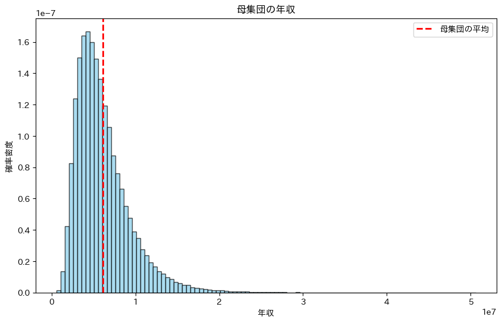

ch02 統計的推測と時系列分析
1 はじめに
- 定常性
- 自己回帰
- 周期の探し方
- 欠測値補間
2 Code 2.1
3 Code 2.2
Code
母集団の平均: 6111262.04, 母集団の標準偏差: 3254959.76Code
figx, ax = plt.subplots(figsize=(10, 6))
plt.hist(
population_income,
bins=100,
density=True,
color='skyblue',
edgecolor='black',
alpha=0.7
)
plt.axvline(
population_mean,
color="red",
linestyle="dashed",
linewidth=2,
label="母集団の平均"
)
plt.title("母集団の年収")
plt.xlabel("年収")
plt.ylabel("確率密度")
plt.legend()
plt.show()
4 Code 2.4
Code
from scipy import stats
sample_size = 100
sample_income = np.random.choice(population_income, size=sample_size, replace=False)
sample_mean = np.mean(sample_income)
sample_std = np.std(sample_income, ddof=1) # 標本標
sample_se = sample_std / np.sqrt(sample_size)
confidence_interval = stats.t.interval(
0.95,
df=sample_size-1,
loc=sample_mean,
scale=sample_se
)
print(f"標本の平均: {sample_mean:.2f}, 標本の標準偏差: {sample_std:.2f}")
print(f"95% 信頼区間: {confidence_interval}")標本の平均: 6189692.82, 標本の標準偏差: 3847968.16
95% 信頼区間: (np.float64(5426172.458411219), np.float64(6953213.190320864))